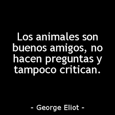
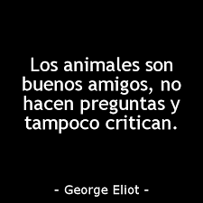

Para pensar...
LOGO
Se inició hace dos años y medio con el objetivo de mejorar, proteger y defender a los animales que están en peligro de extinción. Según su presidente, José Francisco Maciá, se definen como “una Asociación Protectora de Animales. Su labor y la de su equipo es luchar por la seguridad y los derechos de los animales, tanto domésticos como salvajes.
Para pensar...
La caza ilegal y la pérdida de hábitat actualmente amenaza a las cinco especies sobrevivientes de rinoceronte, pero ninguna está tan críticamente en peligro como el rinoceronte de Java. Una vez encontrado en una franja en Asia sudeste, desde India hacia Indonesia, dos de sus tres subespecies están extintas, incluyendo una variedad vietnamita cuyo último miembro fue asesinado por un cazador ilegal en el 2010. Eso deja alrededor de 40 individuos en el Parque Nacional Ujung Kulon, en la isla de Java. Dado que ningún rinoceronte de Java existe en cautiverio, el destino de esta especie se encuentra en estos últimos ejemplares.
Contamos con grupos de voluntarios que participan en las actividades de cuidado junto a un equipo de profesionales tambien comprometidos con la causa.